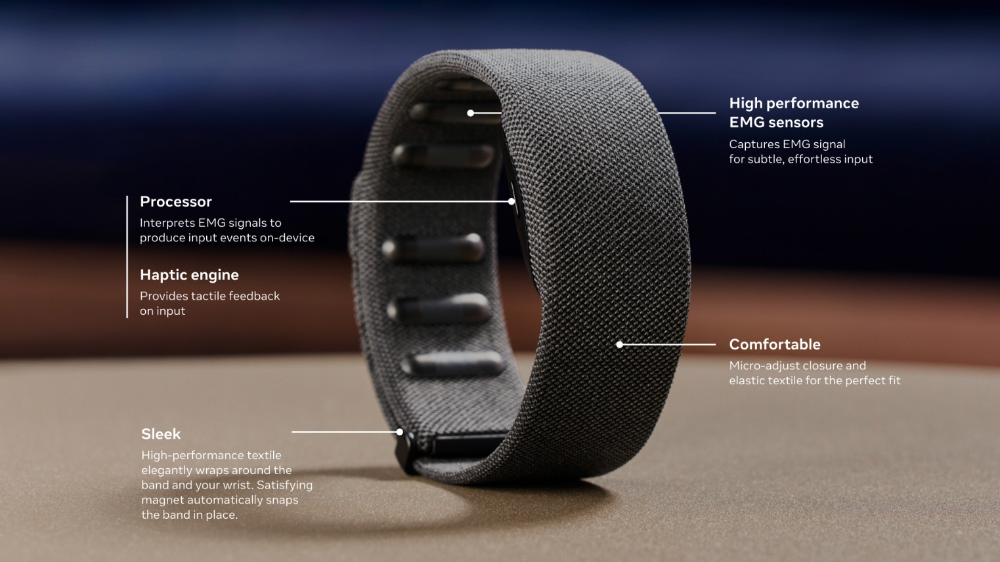
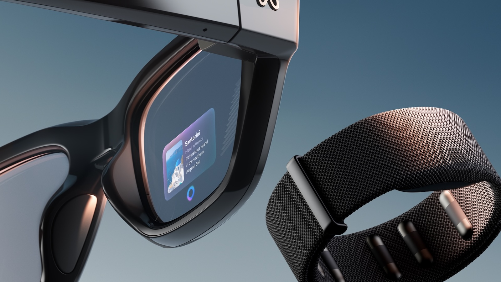
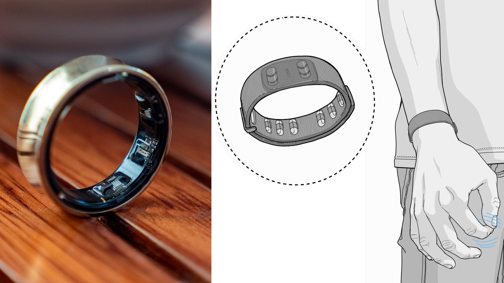

Meta Neural Wristband
Dispositivo de interfaz electromiografica para control por microgestos
Por que se incluye este dispositivo?
La Meta Neural Wristband se ha incluido por ser un avance clave en la Interaccion Persona-Ordenador. Se trata de una pulsera equipada con sensores electromiograficos (EMG) capaces de leer los impulsos electricos que el sistema nervioso envia a los musculos de la muneca y las manos.
Aporta el beneficio de interpretar la intencion de movimiento del usuario antes de que se complete el gesto fisico, permitiendo controlar interfaces digitales sin necesidad de tocar una pantalla o sostener mandos mecanicos.
Beneficios en la Interaccion Persona-Ordenador
Interaccion Discreta
Permite enviar ordenes a dispositivos con pequenos movimientos imperceptibles de los dedos, incluso con las manos dentro de los bolsillos o descansando en el regazo.
Sin Fatiga Muscular
Elimina el cansancio de mantener los brazos levantados en el aire para interactuar con pantallas o entornos virtuales inmersivos.
Respuesta Inmediata por EMG
La lectura directa de senales musculares reduce la latencia de entrada de datos a niveles casi nulos, logrando una sensacion de control instantaneo.
Accesibilidad Universal
Permite interactuar a personas con movilidad reducida o temblores, ya que el sistema traduce pequenos impulsos electricos en acciones precisas.
Evolucion Historica y Sustitucion de Dispositivos
1. Sustitucion de ratones y teclados mecanicos
Los perifericos tradicionales dependen de botones fisicos y movimiento sobre superficies planas. La pulsera neuronal sustituye la pulsacion mecanica por la interpretacion directa de los impulsos nerviosos de la mano.
2. Evolucion sobre el seguimiento de manos por camara
El seguimiento por vision artificial falla cuando hay poca luz o cuando la mano sale del angulo de la camara. La lectura EMG en la muneca resuelve este problema al no depender de sensores opticos externos.
3. Eliminacion de mandos fisicos de Realidad Virtual
Sustituye la necesidad de sujetar mandos voluminosos de plastico para interactuar en espacios virtuales, reduciendo el hardware necesario a una simple pulsera ligera.
Imagenes del Dispositivo

Dispositivo tipo pulsera con sensores de electromiografia integrados.

Vista detallada de los sensores y ajuste del dispositivo.

Interaccion mediante microgestos neuronales en tiempo real.
Mas Informacion
Para consultar la investigacion oficial sobre interfaces neuronales y los avances en tecnologia EMG:
Visitar Portal de Investigacion de Meta